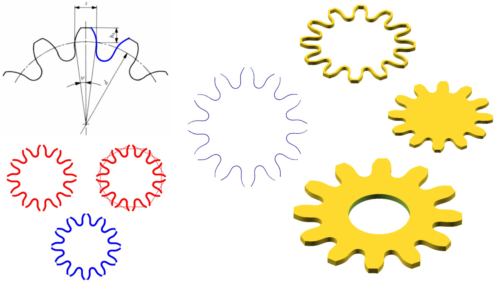
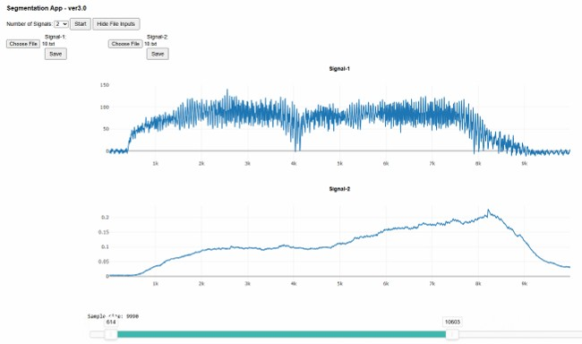
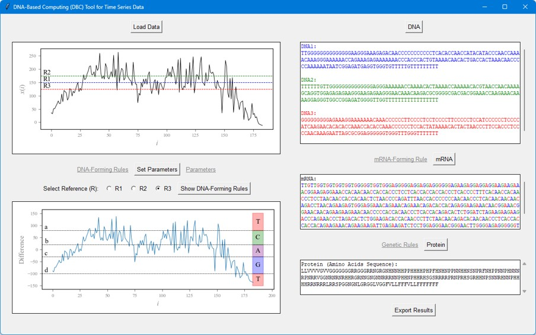
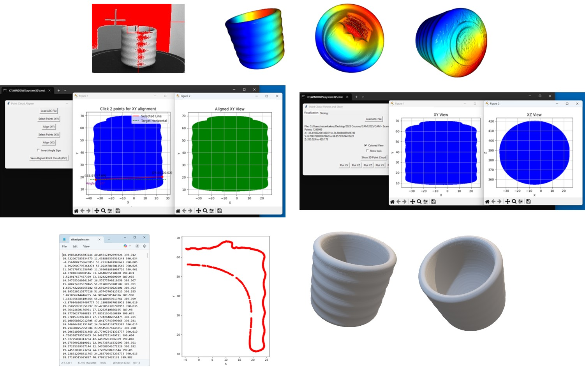
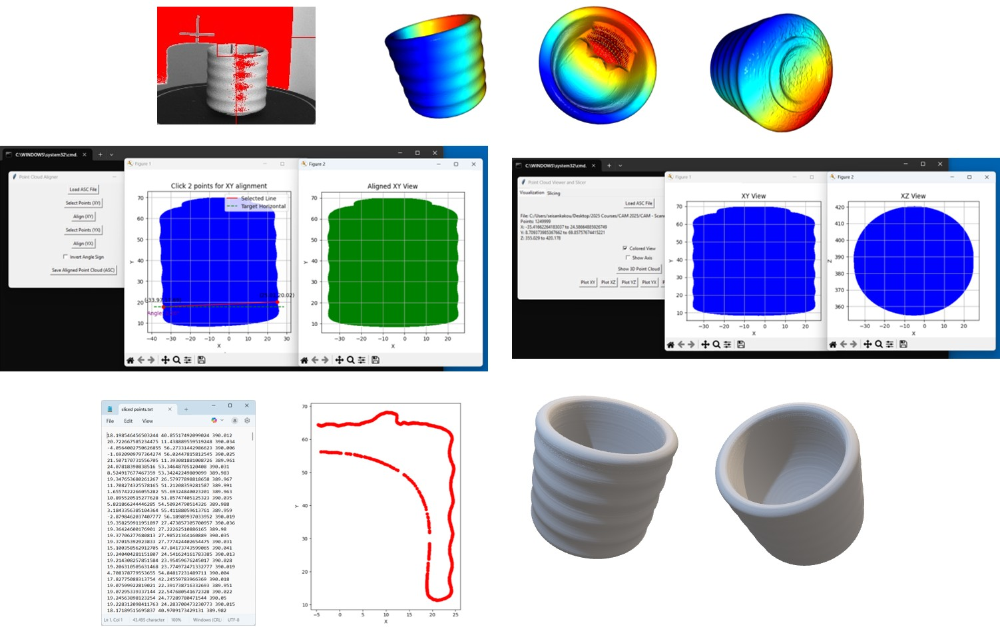

In our research group, we develop various systems and tools essential for advancing manufacturing research.

Our team welcomes inquiries and potential collaborations.
Whether you need assistance developing new solutions or refining existing ones, we are ready to help.
I typically lead the technical aspects of system development, and our combined expertise spans a wide range of programming languages (Python, MATLAB, Java, JavaScript, C++, C, C#, and VBA) and web frameworks (HTML, Django, and Flask).
If you have a specific project in mind, feel free to get in touch—we're excited to support innovative ideas and work together toward impactful outcomes.
We are also experienced in data science and analytics, handling diverse datasets (textual, numerical, and image-based) and leveraging cutting-edge techniques, including image processing and Generative Artificial Intelligence (GenAI).
Whether you need assistance developing new solutions, refining existing ones, or analyzing complex data, we are ready to help.
To explore our work further, you may access, download, and use some of our developed systems through the resources provided below.
(1) Point Cloud Creation Systems

Point Cloud Creation Systems (PCCS) are a set of systems we have developed—and continue to refine—as part of our ongoing research project on point cloud generation (Project PC). These systems are designed to explore and implement innovative methods for generating point clouds (PC) as the foundation for shapes and CAD models. Points, represented as Cartesian coordinates, are treated as the "DNA" of any shape. PCCS reflects our focus on practical, human-in-the-loop approaches that minimize computational burden, eliminate reliance on commercial tools, and emphasize human creativity over black-box methods. The overarching goal is to simplify point cloud creation and support their application in CAD modeling and reverse engineering.
Click here to access!
Click here to see examples!
(2) Signal Segmentation Apps

The Signal Segmentation Apps enable users to upload, visualize, and segment signal data. Version 1.0 supports a single signal file with interactive segmentation via a range slider and the ability to save the segmented portion. Version 2.0 enhances this functionality by handling three signals simultaneously, providing individual plots, shared segmentation controls, and separate save options for each signal. Building on this, Version 3.0 introduces full flexibility by allowing users to define the number of signals to segment concurrently, with the system dynamically adapting to display the corresponding plots, segmentation tools, and save options for each signal.
Click here to access!
(3) Spur Gear Design Tool


This tool generates point clouds of gear/pinion tooth profiles. Version 4 animates a meshing pair—a gear and a pinion—with fixed parameters (including a 20° pressure angle). In contrast, Version 5 focuses on a single gear/pinion, allowing user-defined inputs for the module, teeth, pressure angle, and scale, and adds extra visual features like addendum and dedendum circles plus a static plot of the point cloud. Both versions enable users to quickly generate and analyze gear/pinion profile data for simulation or CAD integration.
(Version 4) Click here to download!
(Version 5) Click here to download!
[Note: While downloading, Google Drive may warn that a virus scan couldn’t be performed on this file. If you trust the source, please click 'Download anyway'.]
(4) DNA-Based Computing Tool

This tool ingests a one-dimensional numerical time series. It then allows the configuration of parameters (in default, modified, or direct-input modes) and applies DNA-forming rules to translate time series data into DNA sequence(s). It constructs an mRNA from that DNA(s), following an mRNA-forming rule, and ultimately derives a protein via a built-in codon-to-amino-acid mapping (Genetic Rules) from the mRNA. The DBC tool supports exporting the final results (DNA, mRNA, Protein) in JSON format.
Click here to download!
[Note: While downloading, Google Drive may warn that a virus scan couldn’t be performed on this file. If you trust the source, please click 'Download anyway'.]
(5) 3D Point Cloud Processor for Symmetric Object Reconstruction
 

We have developed a set of human-centered systems that support the visualization, inspection, and processing of 3D point clouds acquired through 3D scanning. Designed for ease of use, these tools allow human operators to intuitively plot point clouds across multiple planes (e.g., XY, YZ, and XZ), identify and correct alignment issues such as tilt, and extract clean segments of the data through selective slicing—particularly effective for reconstructing symmetrical objects. By focusing only on essential regions, the systems reduce computational load and minimize the impact of noise during post-processing. While our current applications are optimized for symmetrical shapes, we are actively extending our work to support more complex, non-symmetrical geometries. If you are facing similar challenges or believe such systems could benefit your operations, we are open to collaboration and invite you to get in touch.
If you’re interested in collaborating or have any inquiries about our technical contributions,
feel free to email me directly.
Let’s work together to advance manufacturing and data-driven innovation!